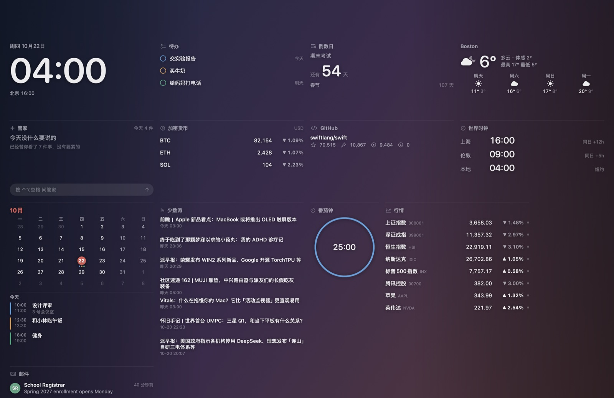
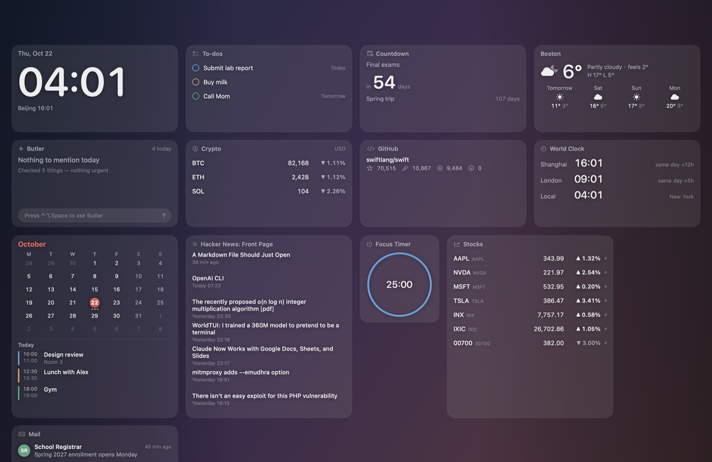
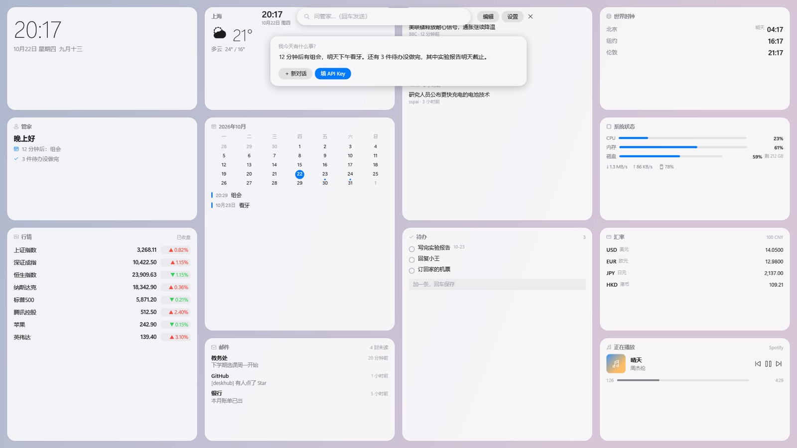
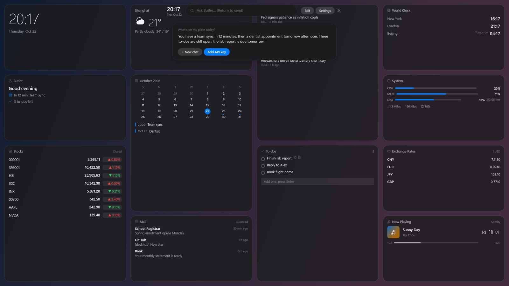
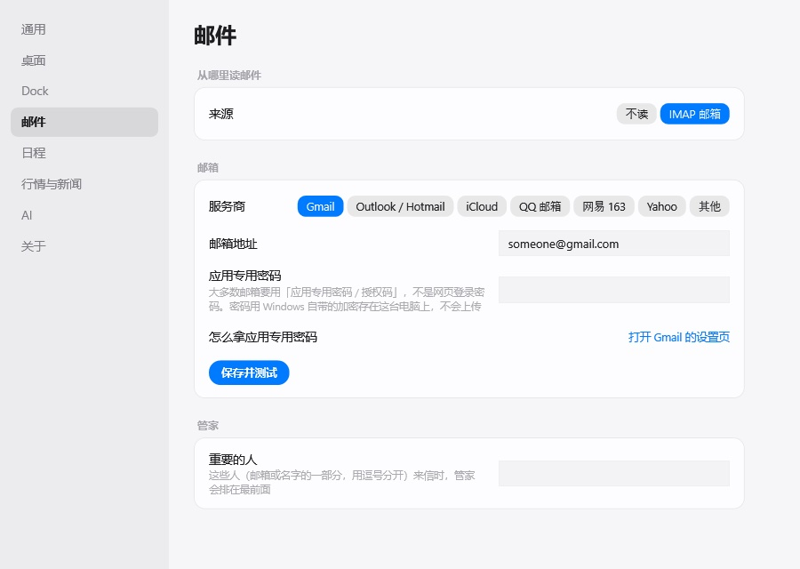
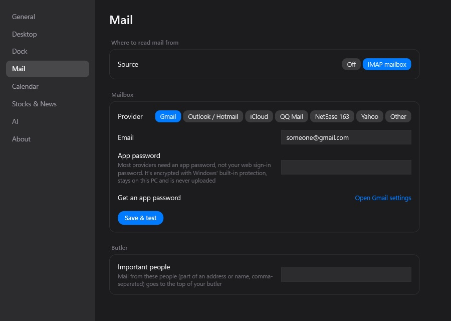
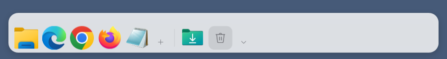
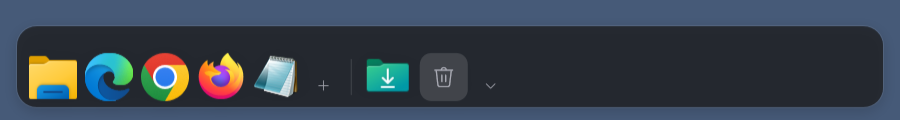
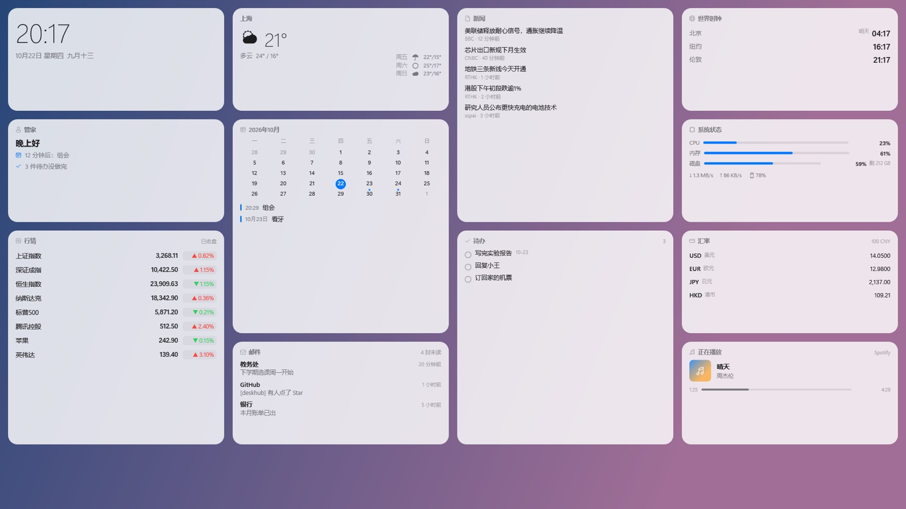
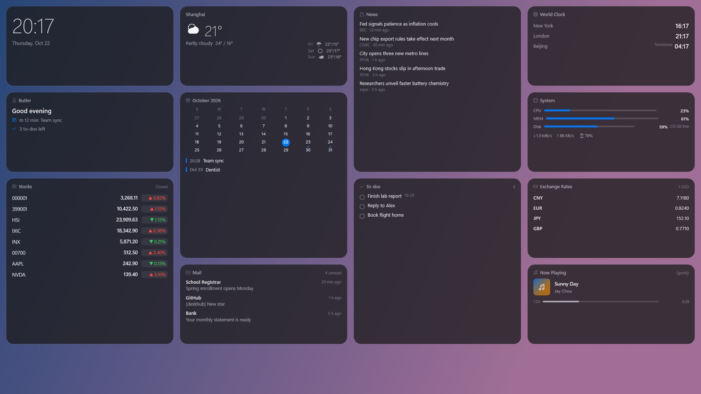

看一眼 今天的事都在这One glance. Your whole day.
安静地待在桌面图标后面 只在重要的时候开口It sits quietly behind your desktop icons and only speaks up when it matters.


收起桌面图标 按一下快捷键 问一句 再按 Esc 回到桌面Hide the icons, press one shortcut, ask a question, then Esc back to your desktop.
时钟、天气、日程、邮件铺在桌面两侧 中间留给你 不挡任何窗口Clock, weather, calendar and mail line both sides of your desktop and never cover a window.
⌃⌥空格 或 Ctrl+Alt+空格 呼出浮层 组件能点 能拖动 能问管家Press ⌃⌥Space or Ctrl+Alt+Space to tap widgets, rearrange them and ask your butler.
马上开始的会、重要的人来信、今天要带伞 其余的安静挂着The meeting about to start, mail from people who matter, rain today. Everything else just waits.
浮层顶部可以直接问管家「我今天有什么事」 也能让它概括一封邮件 填上自己的 DeepSeek Key 就能用Ask "what's on today?" right from the overlay, or have it summarize an email. Bring your own DeepSeek key.


Gmail、Outlook、iCloud、QQ、163 都能连 只读不写 日历可以订阅 Google 和 Outlook 也能用 Mac 自带的日历Gmail, Outlook, iCloud and any IMAP mailbox, read-only. Subscribe to Google or Outlook calendars, or use the Mac's own.


像手机小组件那样分大中小 拖动吸附 自动让位 同一种可以加好几个 各看各的Small, medium and large sizes that snap into place. Add two stock widgets, one for each market.
常用的应用和文件放在底部 下载文件夹点开是一叠最近的文件 不用时收成一条细线Your apps and files at the bottom, a Downloads stack, and it folds into a thin line when you don't need it.
桌面图标先藏起来 只留壁纸和组件 关掉开关就回来 文件一个不动Hide desktop icons and keep only your wallpaper and widgets. Turn it off and everything's back, untouched.




不用注册 没有服务器 不收集任何数据No sign-up, no server, no tracking.
日历和邮件只看不改 不会标成已读 也不会删除或发送Calendars and mail are never changed, marked read, deleted or sent.
代码全部公开在 GitHub 上 MIT 许可Every line is on GitHub under the MIT license.
打开「系统设置 → 隐私与安全性」 拉到最下面点「仍要打开」 之后就不会再问了 这是因为一瞥没有付费的 Apple 开发者签名Open System Settings → Privacy & Security, scroll down and click "Open Anyway". You'll only need to do this once; Glancedesk isn't signed with a paid Apple Developer ID.
点「更多信息」 再点「仍要运行」 不想安装可以下载绿色版 zip 解压就能用Click "More info", then "Run anyway". Prefer not to install? Grab the portable zip and run it directly.
不要 一瞥完全免费 只有问管家用到的 DeepSeek 按它自己的价格收费 不填 Key 也能正常用其他功能No. Glancedesk is free. Only the optional AI uses your own DeepSeek key, billed by DeepSeek. Everything else works without it.
行情来自公开接口 有延迟 只做展示和提醒 不构成任何投资建议 也不会替你下单Market data comes from public APIs, is delayed, and is for display only. It's not investment advice and never places orders.